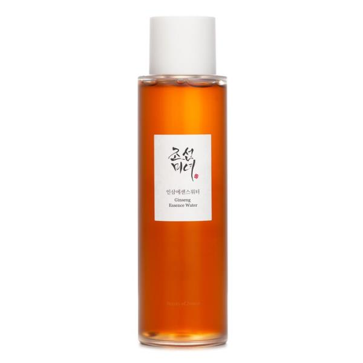
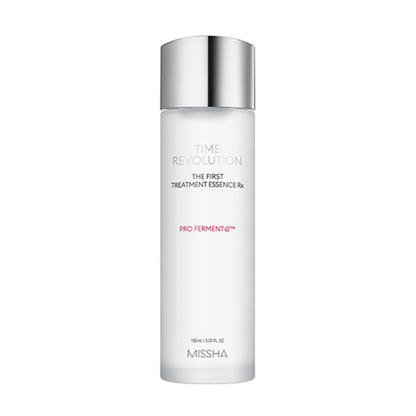
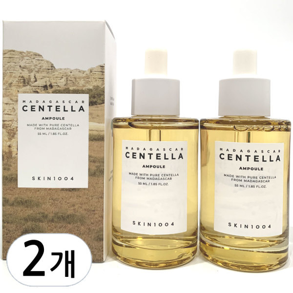
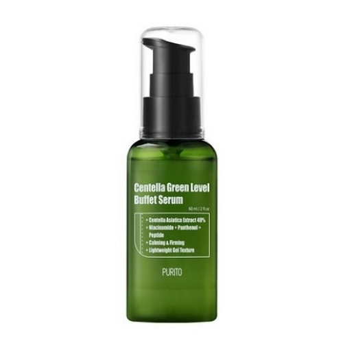
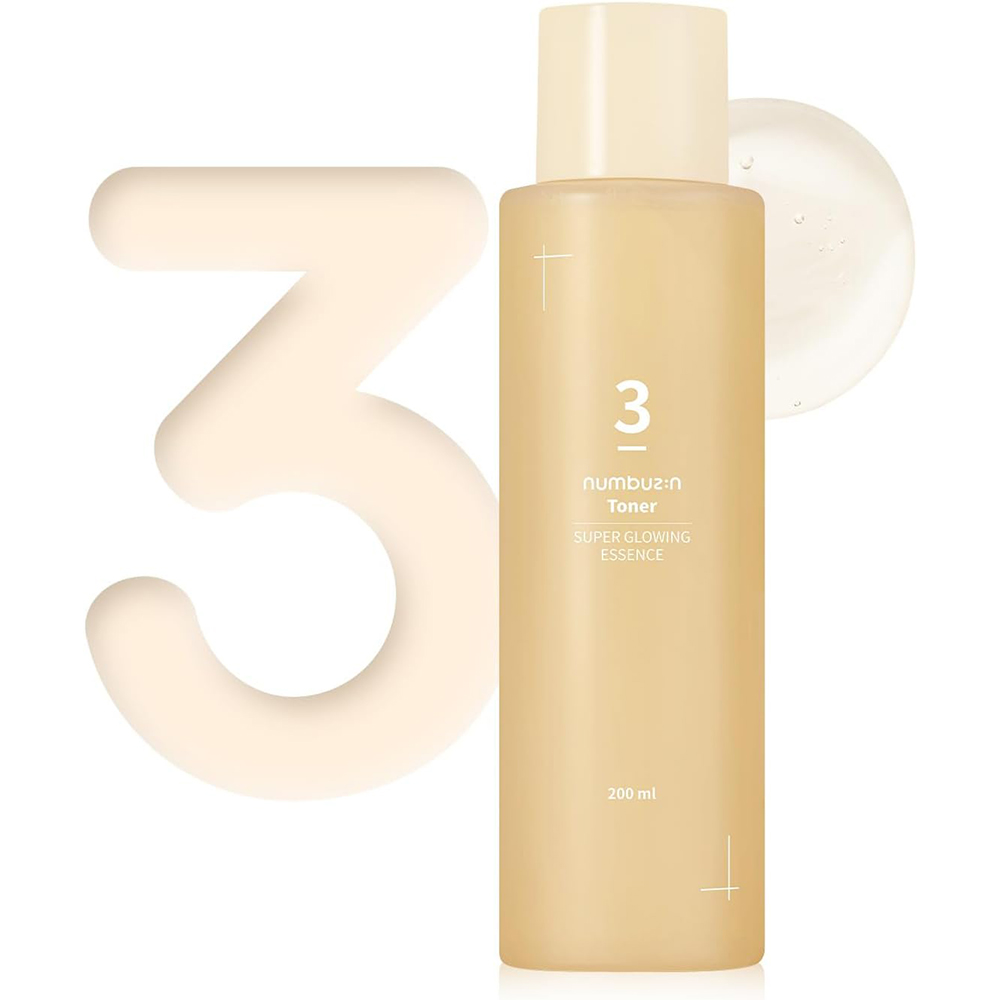

Home › Korean Essence
6 Best Korean Essences for Glass Skin (2026)
The Korean essences for that glow
I rounded up 6 Korean essence worth knowing — the ones K-beauty fans keep coming back to. Real products, honest notes, and roughly what they cost. Prices are approximate; check the retailer for today's price.

Advanced Snail 96 Mucin Power Essence
The cult snail-mucin essence for plump hydration.
The cult snail-mucin essence, at 96%, for plump, bouncy hydration and a healthy look. Slightly slippery texture that many use morning and night.
≈ $25.0 (approx) · Ships worldwide
Check price on Amazon →
Ginseng Essence Water
Lightweight ginseng essence for a healthy glow.
A ginseng essence-toner that adds a nourished, healthy glow. Watery but slightly comforting — nice for dull or tired-looking skin.
≈ $18.0 (approx) · Ships worldwide
Check price on Amazon →
Time Revolution The First Treatment Essence
Fermented first-essence that softens and preps skin.
A fermented first-treatment essence that softens and preps skin for what follows. A long-standing favorite for a smoother, more supple feel.
≈ $30.0 (approx) · Ships worldwide
Check price on Amazon →
Madagascar Centella Ampoule
Pure centella ampoule for stressed, red skin.
A near-single-ingredient centella ampoule to calm stressed, red or reactive skin. Lightweight and fuss-free for troubled days.
≈ $20.0 (approx) · Ships worldwide
Check price on Amazon →
Centella Green Level Buffet Serum
Centella + peptides essence for barrier support.
Centella with peptides and multiple hyaluronic acids for barrier support and hydration. A gentle all-rounder for daily layering.
≈ $20.0 (approx) · Ships worldwide
Check price on Amazon →
No.3 Super Glowing Essence Toner
Glow essence you can layer morning and night.
A hybrid essence-toner known for a glow boost, with niacinamide and rice extracts. Slightly thicker than a basic toner and easy to layer.
≈ $22.0 (approx) · Ships worldwide
Check price on Amazon →Save this for your next K-beauty haul
Prices are approximate and pulled from public shopping data; always check the retailer for the current price and shade/size before buying.